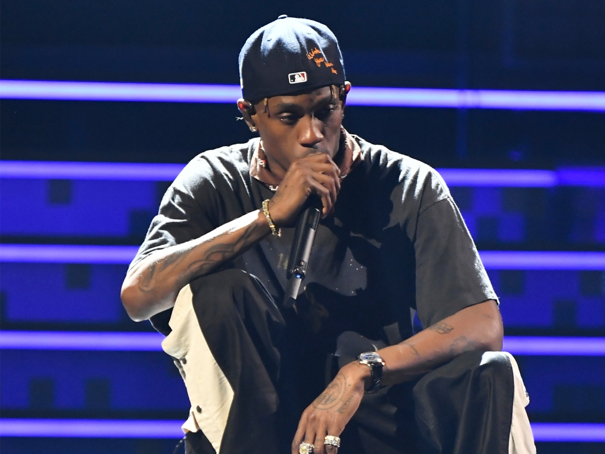

by devin.j.danielson
His third and most recent album Astroworld saw him solidify his place as a top global artist with his first Billboard Hot 100 number-one single Sicko Mode, which he performed at the 2019 Superbowl halftime show. Scott has become known for his personal style — mixing streetwear with high fashion — becoming a streetwear icon with sneaker partnerships with Nike Air Force 1, Nike Air Jordan and Helmut Lang that sell out within seconds. In November 2018, it was announced that Scott would be the face of Saint Laurent for Spring/Summer 2019. In February 2019, Scott’s new music video for his track “Can’t Say” was produced by the luxury house, creative Director Anthony Vaccarello also provided the entire wardrobe for the video. The partnership dates back to November 2016, when Scott starred in a short film for Saint Laurent, a month into Vaccarello’s tenure. Scott won a BET Hip Hop Award for his song Antidote in 2016, and won the Top Streaming Song at the Billboard Music Awards in 2019 for Sicko Mode. He was also nominated for 24 other awards in 2018 and 2019 for his music.
Jacques Bermon Webster II was born on April 30, 1991 in Houston, Texas. From ages one through six, Webster lived with his grandmother in South Park, Houston. Located in south-central Houston, the neighborhood was notorious for crime and had an impact on a young Webster, "Growing up, my grandmother stayed in the 'hood so I seen random crazy stuff. [I saw] mad bums and crazy spazzed out people, I saw people looking weird, hungry, and grimey [sic]. I was always like, 'I gotta get the out pf this.' It gave me my edge—[it made me] who I am right now." Webster moved to Missouri City, a middle-class suburban area bordering southwest Houston, to live with his parents. His mother worked for Apple and his father ran his own business. Webster's father is also a soul musician and his grandfather was a jazz composer. Webster attended Elkins High School and graduated at seventeen. During high school, he participated in musical theater. Webster then attended the University of Texas at San Antonio, before dropping out his second year to fully pursue his music career.
Webster formed a duo with his longtime friend Chris Holloway known as The Graduates. In 2008, the duo released their untitled first EP on social networking website Myspace. The following year, Scott and OG Chess, one of Scott's schoolmates, formed the group The Classmates. The Classmates released two projects, with Buddy Rich in 2009 and Cruis'n USA in 2010. Scott mainly handled production work on both projects. The duo remained together until late 2012, when personal conflicts and financial disputes led to the disbandment of the group. After leaving college, Scott moved from Houston to Washington Heights in New York City where Scott began working with friend Mike Waxx, who owned the music website Illroots. After moving to New York, Scott slept on the floor at his friend's house and spent most of his time at Just Blaze's studio. Eventually frustrated in New York and the lack of progression, Scott moved to Los Angeles, California, after only four months in the state. In Los Angeles, Webster was abandoned by his friend who had promised to help him by providing housing.